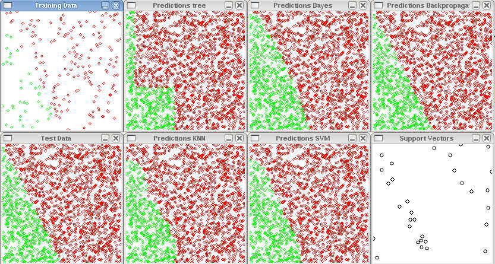
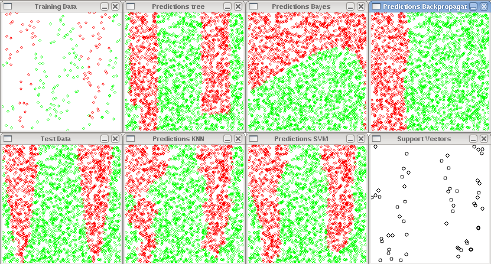
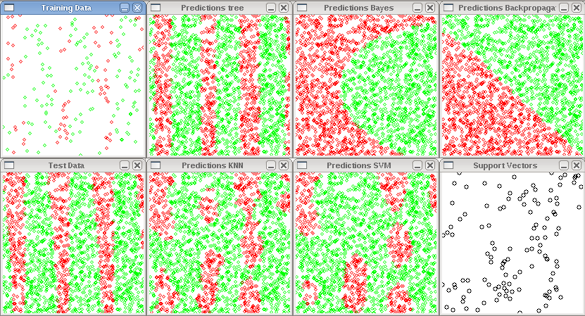

Machine Learning with OpenCV
Machine Learning is a branch of Artificial Intelligence and concerned with the question how to make machines able to learn from data. The core idea is to enable a machine to make intelligent decisions and predictions based on experiences from the past. Algorithms of Machine Learning require interdisciplinary knowledge and often intersect with topics of statistics, mathematics, physics, pattern recognition and more.
OpenCV (Open Source Computer Vision) is a library for computer vision and comes with a machine learning library for:
- Decision Trees
- Boosting
- Support Vector Machines
- Expectation Maximization
- Neural Networks
- ...
Finding simple examples to get started is difficult, so I wrote a document and a program for the C++ Machine Learning API of OpenCV. You can download it from my github account at:
Sourcecode
#include <iostream>
#include <math.h>
#include <string>
#include "cv.h"
#include "ml.h"
#include "highgui.h"
using namespace cv;
using namespace std;
bool plotSupportVectors = true;
int numTrainingPoints = 200;
int numTestPoints = 2000;
int size = 200;
int eq = 0;
// accuracy
float evaluate(cv::Mat& predicted, cv::Mat& actual) {
assert(predicted.rows == actual.rows);
int t = 0;
int f = 0;
for(int i = 0; i < actual.rows; i++) {
float p = predicted.at<float>(i,0);
float a = actual.at<float>(i,0);
if((p >= 0.0 && a >= 0.0) || (p <= 0.0 && a <= 0.0)) {
t++;
} else {
f++;
}
}
return (t * 1.0) / (t + f);
}
// plot data and class
void plot_binary(cv::Mat& data, cv::Mat& classes, string name) {
cv::Mat plot(size, size, CV_8UC3);
plot.setTo(cv::Scalar(255.0,255.0,255.0));
for(int i = 0; i < data.rows; i++) {
float x = data.at<float>(i,0) * size;
float y = data.at<float>(i,1) * size;
if(classes.at<float>(i, 0) > 0) {
cv::circle(plot, Point(x,y), 2, CV_RGB(255,0,0),1);
} else {
cv::circle(plot, Point(x,y), 2, CV_RGB(0,255,0),1);
}
}
cv::imshow(name, plot);
}
// function to learn
int f(float x, float y, int equation) {
switch(equation) {
case 0:
return y > sin(x*10) ? -1 : 1;
break;
case 1:
return y > cos(x * 10) ? -1 : 1;
break;
case 2:
return y > 2*x ? -1 : 1;
break;
case 3:
return y > tan(x*10) ? -1 : 1;
break;
default:
return y > cos(x*10) ? -1 : 1;
}
}
// label data with equation
cv::Mat labelData(cv::Mat points, int equation) {
cv::Mat labels(points.rows, 1, CV_32FC1);
for(int i = 0; i < points.rows; i++) {
float x = points.at<float>(i,0);
float y = points.at<float>(i,1);
labels.at<float>(i, 0) = f(x, y, equation);
}
return labels;
}
void svm(cv::Mat& trainingData, cv::Mat& trainingClasses, cv::Mat& testData, cv::Mat& testClasses) {
CvSVMParams param = CvSVMParams();
param.svm_type = CvSVM::C_SVC;
param.kernel_type = CvSVM::RBF; //CvSVM::RBF, CvSVM::LINEAR ...
param.degree = 0; // for poly
param.gamma = 20; // for poly/rbf/sigmoid
param.coef0 = 0; // for poly/sigmoid
param.C = 7; // for CV_SVM_C_SVC, CV_SVM_EPS_SVR and CV_SVM_NU_SVR
param.nu = 0.0; // for CV_SVM_NU_SVC, CV_SVM_ONE_CLASS, and CV_SVM_NU_SVR
param.p = 0.0; // for CV_SVM_EPS_SVR
param.class_weights = NULL; // for CV_SVM_C_SVC
param.term_crit.type = CV_TERMCRIT_ITER +CV_TERMCRIT_EPS;
param.term_crit.max_iter = 1000;
param.term_crit.epsilon = 1e-6;
// SVM training (use train auto for OpenCV>=2.0)
CvSVM svm(trainingData, trainingClasses, cv::Mat(), cv::Mat(), param);
cv::Mat predicted(testClasses.rows, 1, CV_32F);
for(int i = 0; i < testData.rows; i++) {
cv::Mat sample = testData.row(i);
float x = sample.at<float>(0,0);
float y = sample.at<float>(0,1);
predicted.at<float>(i, 0) = svm.predict(sample);
}
cout << "Accuracy_{SVM} = " << evaluate(predicted, testClasses) << endl;
plot_binary(testData, predicted, "Predictions SVM");
// plot support vectors
if(plotSupportVectors) {
cv::Mat plot_sv(size, size, CV_8UC3);
plot_sv.setTo(cv::Scalar(255.0,255.0,255.0));
int svec_count = svm.get_support_vector_count();
for(int vecNum = 0; vecNum < svec_count; vecNum++) {
const float* vec = svm.get_support_vector(vecNum);
cv::circle(plot_sv, Point(vec[0]*size, vec[1]*size), 3 , CV_RGB(0, 0, 0));
}
cv::imshow("Support Vectors", plot_sv);
}
}
void mlp(cv::Mat& trainingData, cv::Mat& trainingClasses, cv::Mat& testData, cv::Mat& testClasses) {
cv::Mat layers = cv::Mat(4, 1, CV_32SC1);
layers.row(0) = cv::Scalar(2);
layers.row(1) = cv::Scalar(10);
layers.row(2) = cv::Scalar(15);
layers.row(3) = cv::Scalar(1);
CvANN_MLP mlp;
CvANN_MLP_TrainParams params;
CvTermCriteria criteria;
criteria.max_iter = 100;
criteria.epsilon = 0.00001f;
criteria.type = CV_TERMCRIT_ITER | CV_TERMCRIT_EPS;
params.train_method = CvANN_MLP_TrainParams::BACKPROP;
params.bp_dw_scale = 0.05f;
params.bp_moment_scale = 0.05f;
params.term_crit = criteria;
mlp.create(layers);
// train
mlp.train(trainingData, trainingClasses, cv::Mat(), cv::Mat(), params);
cv::Mat response(1, 1, CV_32FC1);
cv::Mat predicted(testClasses.rows, 1, CV_32F);
for(int i = 0; i < testData.rows; i++) {
cv::Mat response(1, 1, CV_32FC1);
cv::Mat sample = testData.row(i);
mlp.predict(sample, response);
predicted.at<float>(i,0) = response.at<float>(0,0);
}
cout << "Accuracy_{MLP} = " << evaluate(predicted, testClasses) << endl;
plot_binary(testData, predicted, "Predictions Backpropagation");
}
void knn(cv::Mat& trainingData, cv::Mat& trainingClasses, cv::Mat& testData, cv::Mat& testClasses, int K) {
CvKNearest knn(trainingData, trainingClasses, cv::Mat(), false, K);
cv::Mat predicted(testClasses.rows, 1, CV_32F);
for(int i = 0; i < testData.rows; i++) {
const cv::Mat sample = testData.row(i);
predicted.at<float>(i,0) = knn.find_nearest(sample, K);
}
cout << "Accuracy_{KNN} = " << evaluate(predicted, testClasses) << endl;
plot_binary(testData, predicted, "Predictions KNN");
}
void bayes(cv::Mat& trainingData, cv::Mat& trainingClasses, cv::Mat& testData, cv::Mat& testClasses) {
CvNormalBayesClassifier bayes(trainingData, trainingClasses);
cv::Mat predicted(testClasses.rows, 1, CV_32F);
for (int i = 0; i < testData.rows; i++) {
const cv::Mat sample = testData.row(i);
predicted.at<float> (i, 0) = bayes.predict(sample);
}
cout << "Accuracy_{BAYES} = " << evaluate(predicted, testClasses) << endl;
plot_binary(testData, predicted, "Predictions Bayes");
}
void decisiontree(cv::Mat& trainingData, cv::Mat& trainingClasses, cv::Mat& testData, cv::Mat& testClasses) {
CvDTree dtree;
cv::Mat var_type(3, 1, CV_8U);
// define attributes as numerical
var_type.at<unsigned int>(0,0) = CV_VAR_NUMERICAL;
var_type.at<unsigned int>(0,1) = CV_VAR_NUMERICAL;
// define output node as numerical
var_type.at<unsigned int>(0,2) = CV_VAR_NUMERICAL;
dtree.train(trainingData,CV_ROW_SAMPLE, trainingClasses, cv::Mat(), cv::Mat(), var_type, cv::Mat(), CvDTreeParams());
cv::Mat predicted(testClasses.rows, 1, CV_32F);
for (int i = 0; i < testData.rows; i++) {
const cv::Mat sample = testData.row(i);
CvDTreeNode* prediction = dtree.predict(sample);
predicted.at<float> (i, 0) = prediction->value;
}
cout << "Accuracy_{TREE} = " << evaluate(predicted, testClasses) << endl;
plot_binary(testData, predicted, "Predictions tree");
}
int main() {
cv::Mat trainingData(numTrainingPoints, 2, CV_32FC1);
cv::Mat testData(numTestPoints, 2, CV_32FC1);
cv::randu(trainingData,0,1);
cv::randu(testData,0,1);
cv::Mat trainingClasses = labelData(trainingData, eq);
cv::Mat testClasses = labelData(testData, eq);
plot_binary(trainingData, trainingClasses, "Training Data");
plot_binary(testData, testClasses, "Test Data");
svm(trainingData, trainingClasses, testData, testClasses);
mlp(trainingData, trainingClasses, testData, testClasses);
knn(trainingData, trainingClasses, testData, testClasses, 3);
bayes(trainingData, trainingClasses, testData, testClasses);
decisiontree(trainingData, trainingClasses, testData, testClasses);
cv::waitKey();
return 0;
}
Experimental Settings
| Parameter | Value |
|---|---|
| Trainingdata size | 200 |
| Testdata size | 2000 |
Please note: I didn't optimize any parameters in these experiments. A Support Vector Machine may perform much better, if you choose an appropriate Kernel and optimize the parameters subsequently (for example with a Grid Search). A Neural Network may perform much better, when choosing the appropriate number of layers and training iterations. And so on... So don't interpret too much into these experimental results, I really wanted to show some features of OpenCV only.
Results
y = 2x
| Predictor | Accuracy |
|---|---|
| Support Vector Machine | 0.99 |
| Multi Layer Perceptron (2, 10, 15, 1) | 0.994 |
| k-Nearest-Neighbor (k = 3) | 0.9825 |
| Normal Bayes | 0.9425 |
| Decision Tree | 0.923 |
Plot

y = sin(10x)
| Predictor | Accuracy |
|---|---|
| Support Vector Machine | 0.913 |
| Multi Layer Perceptron (2, 10, 15, 1) | 0.6855 |
| k-Nearest-Neighbor (k = 3) | 0.9 |
| Normal Bayes | 0.632 |
| Decision Tree | 0.886 |
Plot

y = tan(10x)
| Predictor | Accuracy |
|---|---|
| Support Vector Machine | 0.7815 |
| Multi Layer Perceptron (2, 10, 15, 1) | 0.5115 |
| k-Nearest-Neighbor (k = 3) | 0.8195 |
| Normal Bayes | 0.542 |
| Decision Tree | 0.9155 |
Plot
